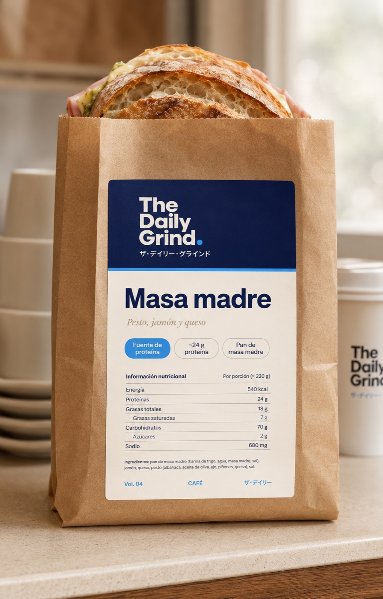

Packaging · sándwich de masa madre
Cuatro formatos sobre el mismo sistema de marca: navy editorial, celeste de firma, base cream, Syne + DM Sans. Cada tarjeta muestra el mockup de referencia; al abrir cada pieza está el arte print-ready (imprimible) con las dos variantes de carta, su información nutricional, y botones para alternar variante y encender el sello ALTO EN.

Faja / sleeve
Banda de papel que se enrolla al sándwich. El centro queda al frente; los costados llevan nutrición y atributos. Bajo costo de impresión, alto impacto. La opción recomendada para café de especialidad.

Sticker / sello
Sello redondo que cierra bolsa o papel encerado. Dos acabados (cream o navy sobre kraft) y hoja A4 troquelable de 9 unidades con guías de corte.

Bolsa kraft + etiqueta
Etiqueta frontal adhesiva sobre bolsa kraft estándar. Lleva tabla nutricional completa e ingredientes. Buena para llevar.

Caja sándwich
Arte de tapa, frente y laterales sobre dieline orientativo. La de mayor presencia; requiere troquel del convertidor.